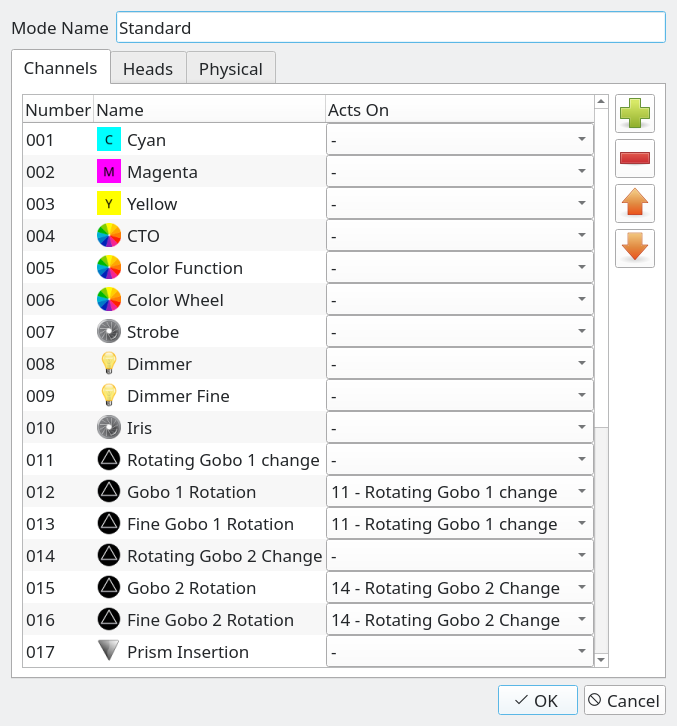
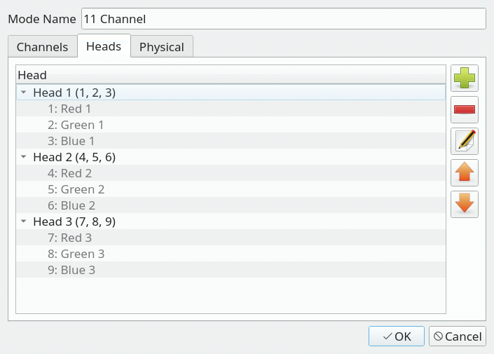

Mode Editor
The Mode Editor is used to create and edit
modes by picking sets of Channels in certain order (as defined by
the fixture's manufacturer). Each editor window is divided into three tabs:
Channels, Heads and Physical.
Channels Tab
In the Channels tab you can place the fixture's channels in an order that forms
an actual representation of the DMX channels that the fixture understands when it
has been configured in that particular mode.

| Mode Name |
The name of the mode (must be unique for each mode). |
| Channel list |
Displays all channels present in the current mode in their proper order.
The "Acts on" column is used to bind a channel to another. For example a channel that
controls the speed of a rotating gobo. |
 |
Add channels from the fixture's channel collection to the mode.
You can create/edit channels in the Fixture
Editor's Channels tab.
When you click on this button a new window will be displayed, showing two lists:
- The list on the left shows the channels that have not yet been added to this mode.
If you're creating a new mode, this list will show all the channels you created
in the Fixture Editor's channels tab
- The list on the right shows the channels that define the mode you're editing.
If you're creating a new mode, this list will be empty.
Please note that the order of the channels in this list is fundamental to the
fixture mode definition.
To move items from one list to another either use the central buttons or simply
drag and drop them.
When done, press OK to update the mode channel list.
|
 |
Remove the selected channels from the mode. Other modes' channel selections are left untouched. |
 |
Raise the selected channel up by one position. |
 |
Lower the selected channel down by one position. |
Heads Tab
In the Heads tab you can define multiple heads for a
single fixture, so that QLC+ knows to treat each of them individually in certain
situations (such as Fixture Groups). If a fixture
contains only one head when it's configured to use the currently edited mode (i.e. all
of the mode's channels control one head at a time) there is no need to define the head. If,
however, the fixture has multiple heads that you wish to be able to control, you must define
each head here.
Heads don't have names as they can be thought of as simple "sub-fixtures" inside a fixture.
Instead, they are automatically given index numbers. The ordering of the Heads should follow the
physical fixture's configuration as closely as possible. So, if the heads go 1, 2, 3, 4 in
the real world, don't define them as 4, 2, 1, 3 or something equally annoying.

| Head list |
Displays the list of heads currently defined for the fixture. |
|
Add a new head to the fixture, using the Head Editor. |
|
Remove the selected head from the fixture. |
 |
Edit the selected head using the Head Editor. |
|
Raise the selected head upwards by one. You can use this to change the order of the heads
within the fixture.
|
|
Lower the selected head downwards by one. You can use this to change the order of the
heads within the fixture.
|
Head Editor
The Head Editor is used to create and edit heads
by picking sets of Channels that are dedicated to a single head (as defined by the
fixture's manufacturer).
Editing a head is very simple: place a checkmark on each channel that is used ONLY by the
head you are currently editing. Note that you should check the channels specific to a head,
and nothing more. For example if there are 3 heads each with a dedicated dimmer control,
then you should include the dimmer channel too. If, instead, the fixture has a single dimmer
channel to control the intensity of all the heads together, then do not incude it in the head
definition.

|
| Channel list |
Displays the list of all fixture channels available in the current mode. Channels that
have been assigned to another head are disabled and cannot be selected because each
channel can only belong to one head at a time.
|
|
Physical Tab
This tab is identical to the global physical tab
found in the main Fixture editor windows.
The only difference is that here you can choose if the mode you're editing has the same
physical information or different ones.
In the first case just leave the "Use global settings" option checked.
If the mode exposes different properties, then check the "Override global settings" option
and fill in all the information required.